Vontela Sanjay Kumar
Prediction of Kaggle Titanic Survival
Overview
This is a Machine Learning challenge where we need to create a model that predicts which passengers survived Titanic shipwreck. Click on Join Competition to sign-in to Kaggle and gain access to the data. In this challenge, we need to build a predictive model that predicts which passengers survives and which doesn’t using passenger data such as “Sex, Age, Ticket Fare, e.t.c”. In this challenge we have access to 2 datasets that contain passenger data such as “Name, Sex, Ticket Fare, Cabin, etc”. to create our model which describes weather a passenger survives or not. We have access to 2 datasets named train.csv and test.csv. The both datasets contains the same information except train.csv has a extra column called “Survived” which tells us weather the passenger survived or not :
- If the value of survived is 1 then the passenger survived.
- … if the value of survived is 0 then the passenger did not survive.
Test.csv has all the information that train.csv have but doesnot have the “truth variable” Survived. The model we created trains on train.csv data and we need to predict the test.csv data. After predicting the data from test.csv the data is saved into a new csv file called solution.csv which contains two columns one is “PassengerID” and the other is “Survived” which we predicted from test data and they are in increasing order of PassengerID. The columns in submision.csv:
- a "PassengerId" column containing the IDs of each passenger from test.csv.
- a "Survived" column with a "1" for the rows where you think the passenger survived, and a "0" where you predict that the passenger died.
Code
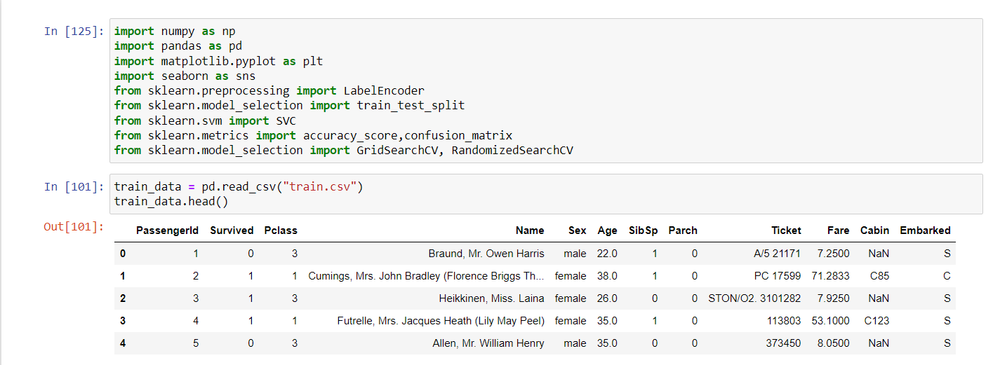 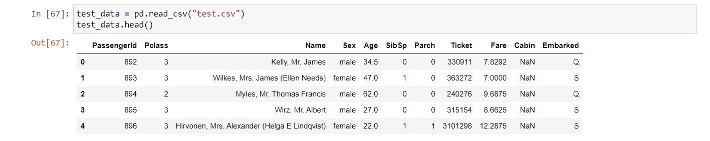 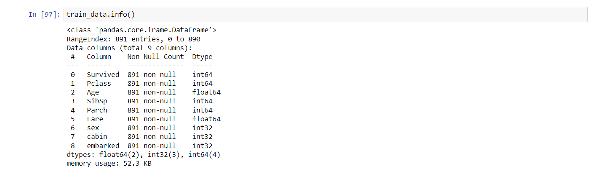 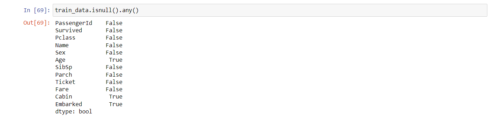 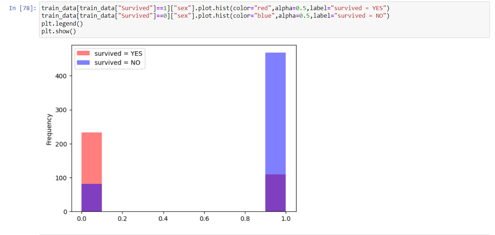
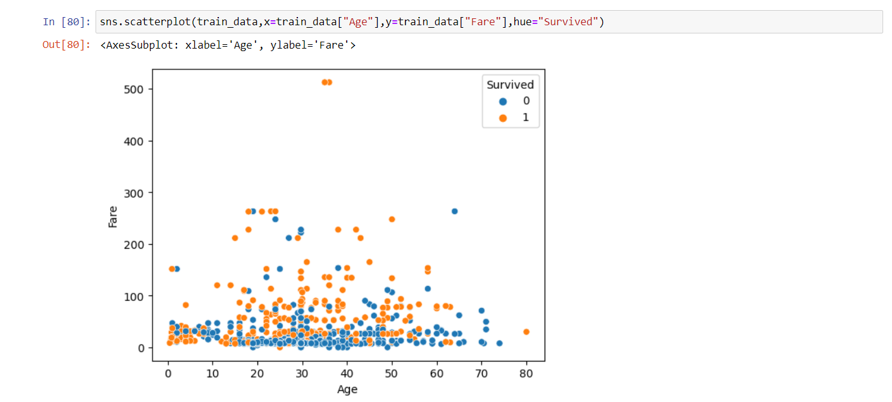
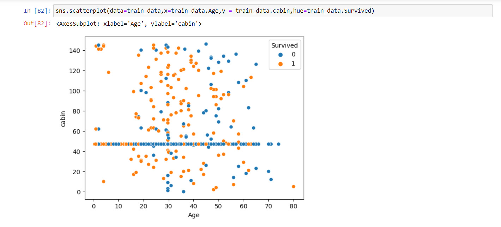
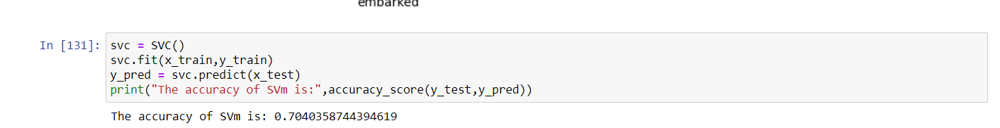
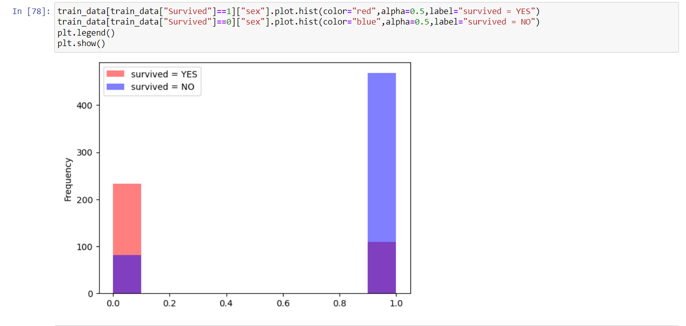
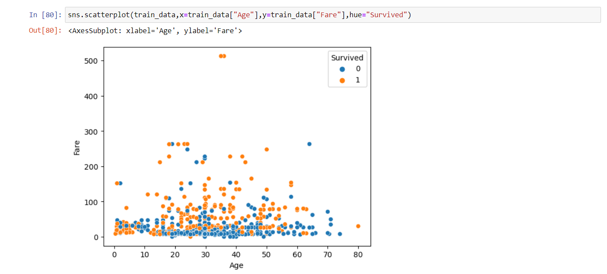
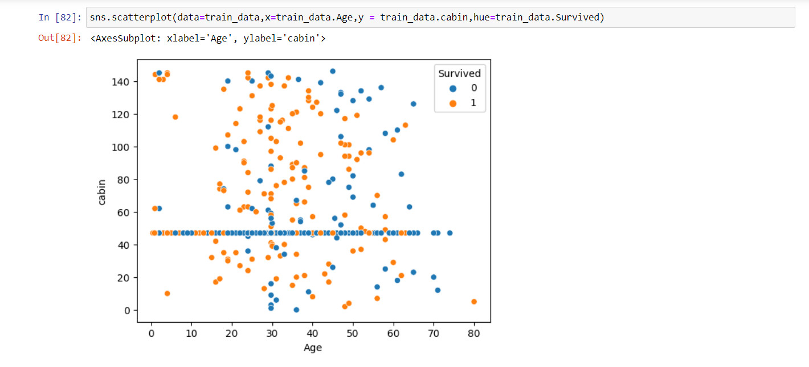
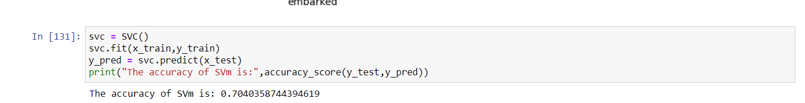
The model we used is Model “Support Vector Machine” to predict the survival of passengers has an accuracy of 70% i.e, the model is able to predict 70% of the entities correctly.
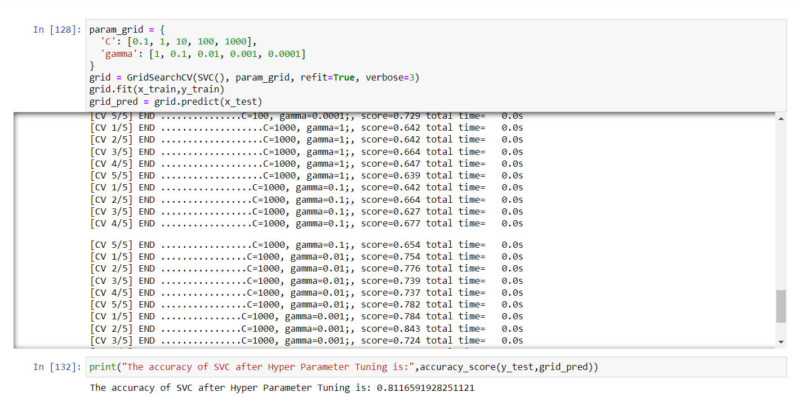 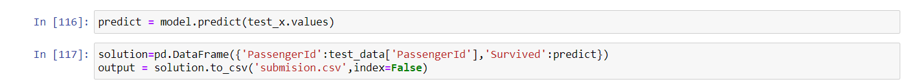Contribution
To increase the accuracy of the model I used a method call GridSearchCv to find the optimal parameters for the model. The GridSearchCv takes parameters for the models and does cross-validation technique for each parameter to determine the best parameter for model. Using GridSearchCv my models accuracy increased from 70% to 81% for the unknown values of training data and for testing data it predicted the values with accuracy of 77.5%.